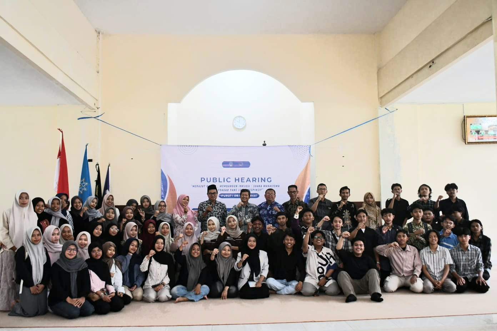

Kegiatan
Senat Mahasiswa Fuadah 2026
Public Hearing: Ruang Terbuka untuk Menyampaikan Aspirasi Mahasiswa
Senat Mahasiswa Fuadah 2026 menghadirkan ruang dialog terbuka bagi mahasiswa untuk menyampaikan aspirasi, gagasan, kritik, dan saran demi terciptanya lingkungan kampus yang lebih baik.